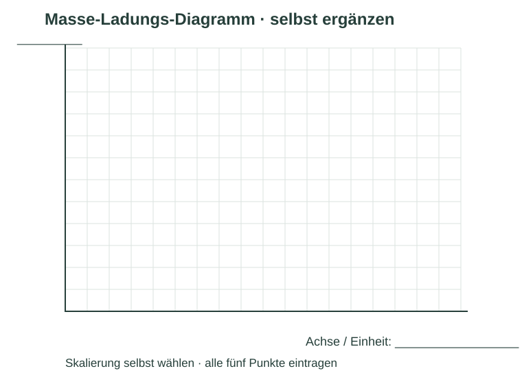
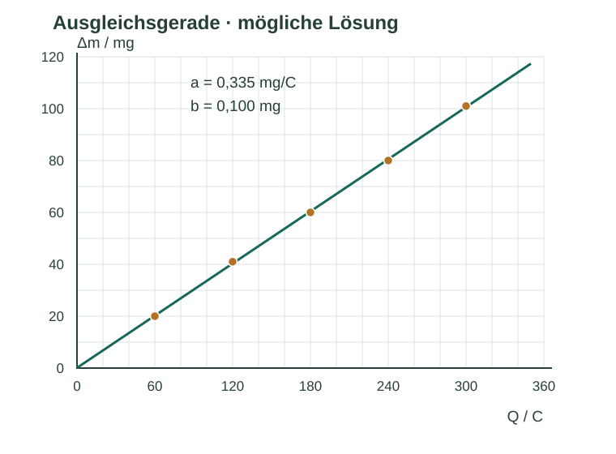

Informieren
Erklärung und Beispiel öffnen
Ein echter Versuch erfasst zwei voneinander unabhängige Größen: den Ladungsbetrag Q aus Strom und Zeit und die Massenzunahme Δm durch Wägung derselben Elektrode vor und nach der Abscheidung. Geeignete Daten können zeigen, ob Δm annähernd proportional zu Q ist.
Trage Q auf der waagerechten Achse und Δm auf der senkrechten Achse auf. Eine Ausgleichsgerade beschreibt den gemeinsamen Trend. Sie muss nicht durch jeden Messpunkt laufen. Prüfe vorher, ob die Wägungen hinreichend trocken, plausibel und nachvollziehbar sind; Daten werden nicht nur deshalb ausgeschlossen, weil sie schlecht zur gewünschten Geraden passen.
Für idealisierte Kupferabscheidung gilt Δm = M Q/(2F). Ist a die Steigung der Geraden, folgt:
a = Δ(Δm)/ΔQ ≈ M/(2F) → Fexp ≈ M/(2a).
Die Steigung beschreibt Massenzunahme pro Ladung. Bei M in g/mol muss a in g/C eingesetzt werden. 0,330 mg/C sind 0,000330 g/C, nicht 0,330 g/C.
Beispiel: ein Steigungsdreieck lesen
Auf einer beispielhaften Ausgleichsgeraden liegen die gut ablesbaren Punkte (50 C | 17,0 mg) und (250 C | 83,0 mg). Dann ist a = (83,0 − 17,0) mg/(250 − 50) C = 0,330 mg/C = 0,000330 g/C. Mit M(Cu) = 63,55 g/mol ergibt sich Fexp ≈ 63,55/(2 · 0,000330) C/mol ≈ 96 300 C/mol. Ein großes Steigungsdreieck vermindert den relativen Ablesefehler.
Ursprungsgerade oder freier Achsenabschnitt? Das ideale Gesetz erwartet bei Q = 0 auch Δm = 0. Reale Daten können jedoch einen systematischen Massenversatz enthalten. Eine Gerade Δm = aQ + b mit freiem b macht das sichtbar. Ein erzwungener Ursprung kann dann die Steigung verzerren. Die Entscheidung muss zu den Messbedingungen passen.
Eine experimentelle Abschätzung setzt eine passende Stromausbeute und verlässliche Massen- und Ladungsmessungen voraus. Aus zuvor mit dem Tabellenwert von F berechneten Sollmassen gewinnt man beim Rückrechnen keine unabhängige Bestätigung von F. Die folgenden Zahlen sind ausdrücklich konstruierte Übungsdaten, keine Schulmessung.
A · Eine Masse-Ladungs-Reihe auswerten
| Q / C | Δm / mg |
|---|---|
| 60 | 20 |
| 120 | 41 |
| 180 | 60 |
| 240 | 80 |
| 300 | 101 |
Für die Rechenübung werden die Daten als verwendbar behandelt. M(Cu) = 63,55 g/mol; Referenz F ≈ 96 485 C/mol.
- Beschrifte und skaliere die Achsen selbst. Trage die fünf Werte ein und zeichne eine passende Ausgleichsgerade. Nutze zunächst einen freien Achsenabschnitt.
- Bestimme die Steigung mit einem großen Dreieck und schätze F. Vergleiche die Größenordnung mit dem Referenzwert.
- Formuliere genau, was diese Auswertung zeigt und was sie nicht experimentell nachweist.

Hilfe 1
Wähle beispielsweise Q von 0 bis 360 C und Δm von 0 bis 120 mg. Eine Ausgleichsgerade soll den Trend der gesamten Punktwolke erfassen.
Hilfe 2
Eine sinnvolle Steigung liegt ungefähr bei 0,33 bis 0,34 mg/C. Wandle sie vor F = M/(2a) in g/C um. Für eine kontrollierte Vergleichsrechnung ist a = 0,335 mg/C geeignet.
Musterlösung

Eine lineare Ausgleichsrechnung liefert Δm/(mg) = 0,335 · Q/(C) + 0,100. Daher a = 0,335 mg/C = 0,000335 g/C und FÜbung = 63,55/(2 · 0,000335) C/mol ≈ 94 900 C/mol. Handgezeichnete Geraden liefern leicht andere Werte; etwa 0,33–0,34 mg/C ergibt ungefähr 93 500–96 300 C/mol.
Die rechnerische Abweichung der Ausgleichsrechnung beträgt (94 850,7 − 96 485)/96 485 · 100 % ≈ −1,69 %. Die Punkte sind mit einem annähernd proportionalen Zusammenhang vereinbar; der freie Achsenabschnitt ist hier sehr klein. Wegen der konstruierten Daten ist dies eine Übung des Auswertewegs und keine experimentelle Bestätigung. Ohne Unsicherheitsanalyse darf auch ein echtes Messergebnis nicht als exakte Bestimmung ausgegeben werden.
B · Einzelpunkt und Datengrundlage prüfen
- Schätze F ausschließlich aus dem Punkt Q = 120 C und Δm = 41 mg. Vergleiche mit der Geradenauswertung aus A und begründe einen Vorteil mehrerer Messpunkte.
- Jemand erzeugt für alle Q zuerst Sollmassen mit F = 96 485 C/mol und berechnet danach aus deren Steigung F. Beurteile die Aussage: „Mein Experiment hat die Faraday-Konstante exakt bestätigt.“
- Gedankenversuch: Zu jeder Massenzunahme werden irrtümlich 5 mg addiert. Beschreibe qualitativ die Wirkung auf eine Gerade mit freiem Achsenabschnitt sowie auf die F-Abschätzung aus einem einzelnen Punkt bei festem Q.
Hilfe 1
Für einen Einzelpunkt gilt näherungsweise F = M Q/(2Δm). Unterscheide einen konstanten Massenversatz von einer Änderung der Steigung.
Hilfe 2
41 mg = 0,041 g. Ein Zusatz von 5 mg verschiebt alle Punkte gleich weit nach oben. Bei festem Q steht die Massenzunahme im Nenner der F-Formel.
Musterlösung
1. F = 63,55 · 120/(2 · 0,041) C/mol = 93 000 C/mol. Das liegt unter der Geradenabschätzung von rund 94 900 C/mol. Ein Einzelpunkt reagiert stärker auf seinen individuellen Wägefehler; mehrere Punkte zeigen zusätzlich Streuung und mögliche Abweichungen vom linearen Verlauf. Systematische Fehler verschwinden dadurch nicht automatisch.
2. Die Behauptung ist falsch. Die Massen wurden bereits mit dem vorausgesetzten F berechnet. Die Rückrechnung reproduziert diese Annahme und ist zirkulär; es gab keine unabhängig gemessene Massenzunahme.
3. Bei einer Geraden mit freiem Achsenabschnitt steigt b um 5 mg; die Steigung a bleibt bei genau gleichem Versatz unverändert, damit auch das daraus geschätzte F. Beim einzelnen Punkt wird der Nenner größer und F zu klein. Eine pauschale Fehlerrichtung ohne Angabe des Auswerteverfahrens wäre daher ungenau.
Zurück zur Checkliste
Kannst du den Punkt jetzt an einer eigenen Erklärung oder einer neuen Aufgabe nachweisen? Ordne dich ein: sicher (selbstständig), teils (mit Hilfe) oder offen (noch Lernbedarf). Notiere bei Bedarf, was du noch klären möchtest.
Fachliche Quellen und Modellgrenzen
Fachlicher Abgleich: 09.10.2026. Texte, Aufgaben, Zahlenbeispiele und Grafiken sind eigenständig erstelltes Unterrichtsmaterial. Alle Rechendaten sind konstruiert, sofern nicht ausdrücklich als Referenzkonstanten bezeichnet.
- OpenStax · Chemistry 2e, 17.7 – Elektrolyse und quantitative Elektrodenreaktionen.
- BIPM · Resolution 1 (2018) – Exakte SI-Werte von Elementarladung und Avogadro-Konstante, gültig seit 2019.
Steigungsbeispiele und Übungsreihe sind konstruiert. Die Verfahrensbeschreibung ist an die in UE7/UE8 vorgesehene unabhängige Erfassung von Q und Δm angelehnt. Tatsächliche Unterrichtsdaten müssen getrennt von Ersatzdaten dokumentiert werden.